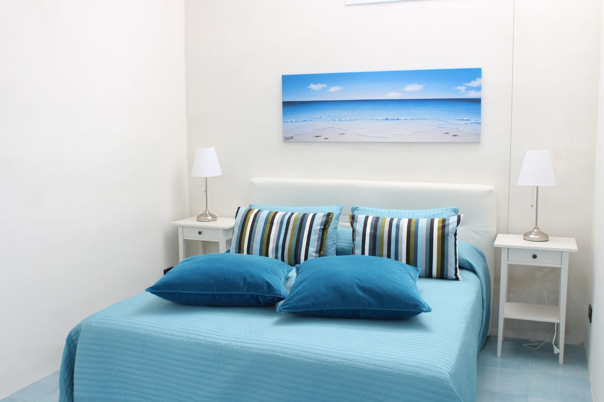
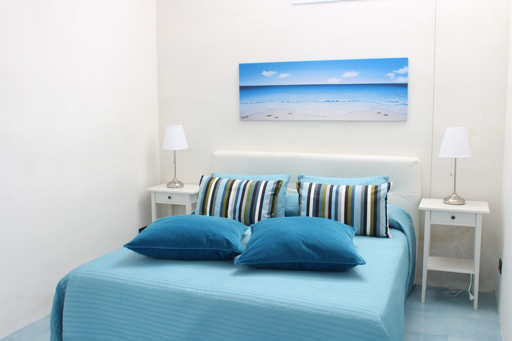
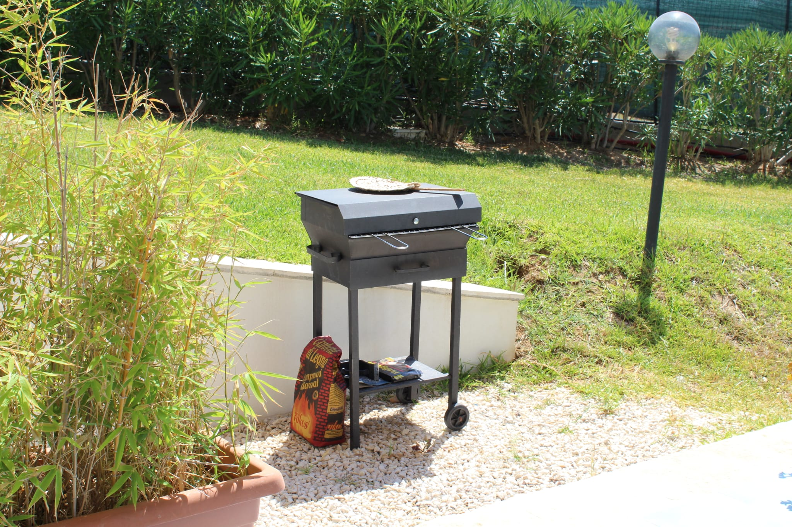
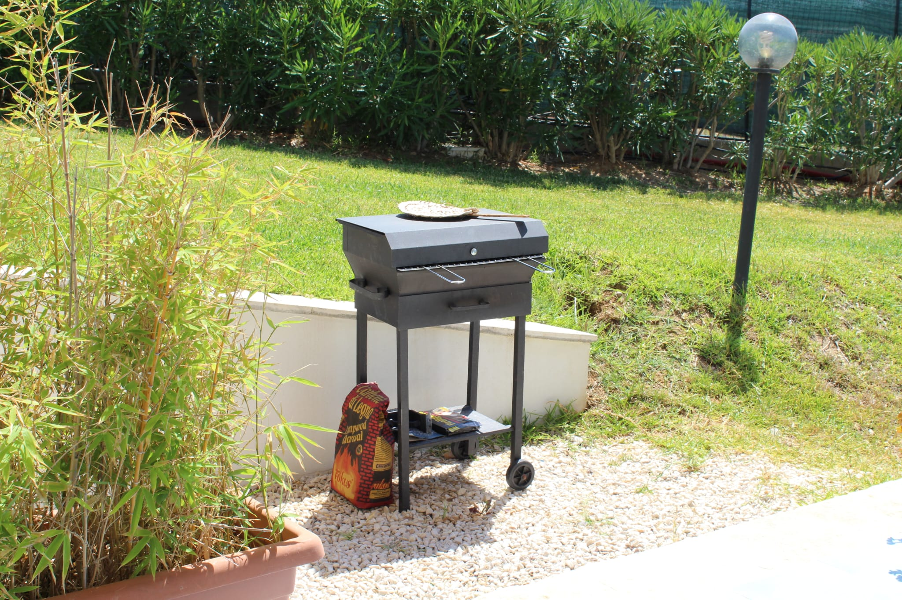

isola del sole
ContattaciAppartamento in villa da 5 posti


Situato a Balestrate, l'Isola del sole, Appartamenti con piscina offre una piscina, biciclette gratuite, un giardino, una vista sulle montagne e sistemazioni con connessione WiFi gratuita. Dotata di terrazza, vista sul mare, area salotto, TV satellitare a schermo piatto e bagno privato con bidet e asciugacapelli, questa casa vacanze include una cucina completamente attrezzata con frigorifero e forno. Non mancano inoltre un microonde, un piano cottura, un tostapane, una macchina da caffè e un bollitore. L'Isola del sole, Appartamenti con piscina dispone di un barbecue. La struttura dista 2,8 km dalla spiaggia di Balestrate e da quella di Calatubo. L’Aeroporto di Falcone-Borsellino, lo scalo più vicino, dista 26 km ed è raggiungibile tramite un apposito servizio di navetta aeroportuale a pagamento.
Appartamento in villa da 4 posti


 



 
